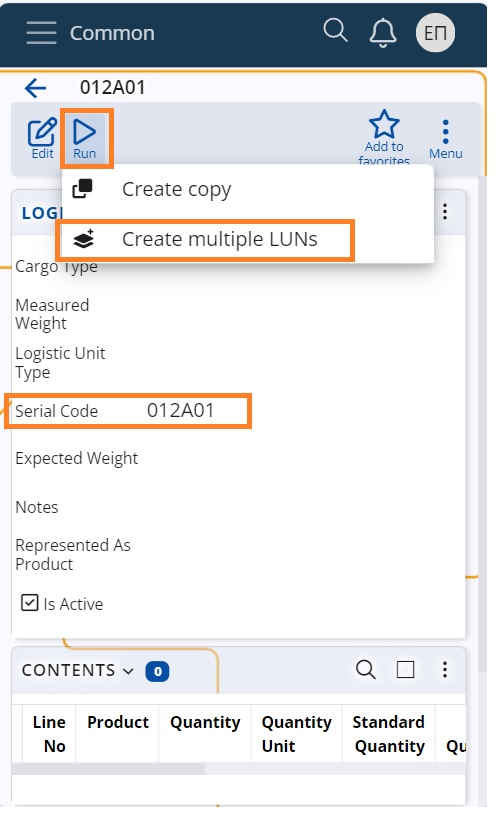
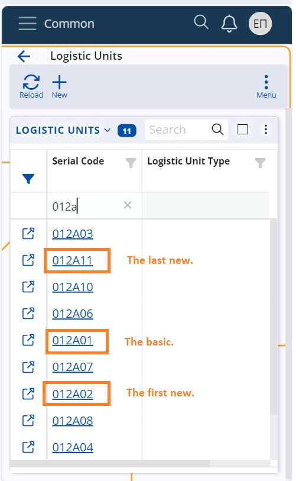

Creating several LUNs of the same series
In order to facilitate the creation of new LUNs and organize better the received/dispatched packages you can initiate the creation of a number of LUNs of the same series at once.
1. Choose the series type, select its last LUN code and run the UI function “Create multiple LUNs”.

2. Input the desired number of new LUNs and the system will generate active LUNs in an ascending coding, belonging to the same series.
For example, if the last LUN bears the code 012A01, and we initiate the creation of 10 more LUNs, they will bear the same coding style.
The new last LUN will be 012A11.

Having the new LUNs at hand you can print labels and stick them to the designated items.